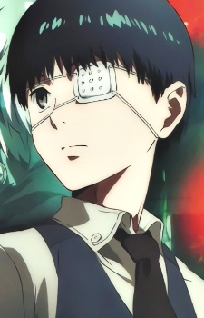
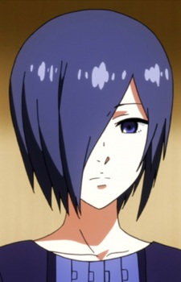

Kaneki Ken
Kaneki Ken is the main protagonist of the series. He is a half-ghoul who struggles to find his place in a world where humans and ghouls are in constant conflict.

Kaneki Ken is the main protagonist of the series. He is a half-ghoul who struggles to find his place in a world where humans and ghouls are in constant conflict.
Rize Kamishiro is a ghoul who becomes Kaneki's first meal. Her actions set off the events of the series.
Shu Tsukiyama is a ghoul who is obsessed with Kaneki and sees him as a gourmet meal.

Touka Kirishima is a ghoul who works at the Anteiku café and becomes Kaneki's ally.

Renji Yomo is a ghoul who works at Anteiku and has a mysterious past.

Main characters